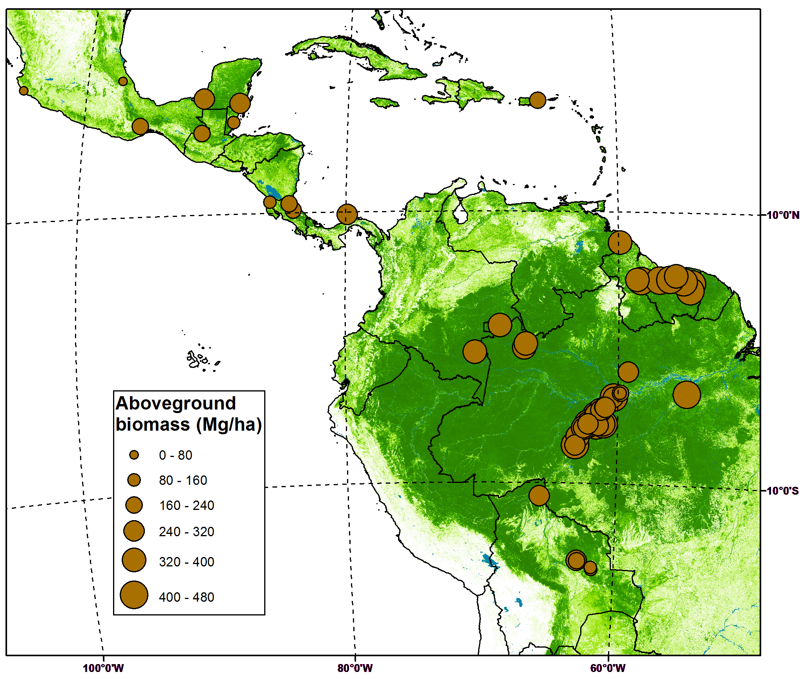
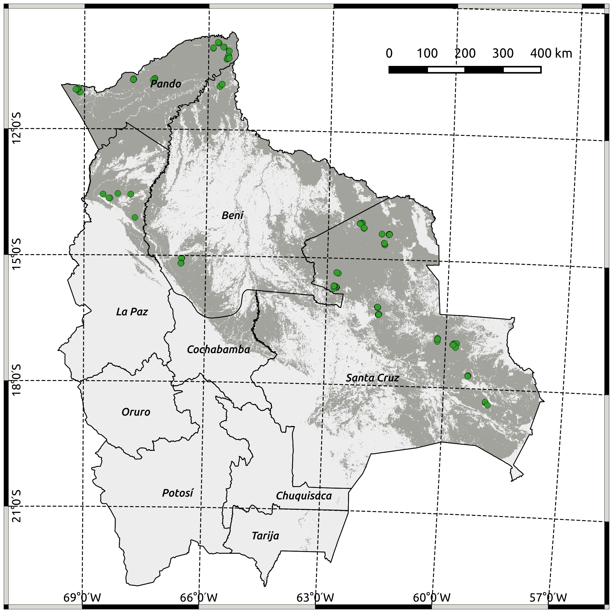
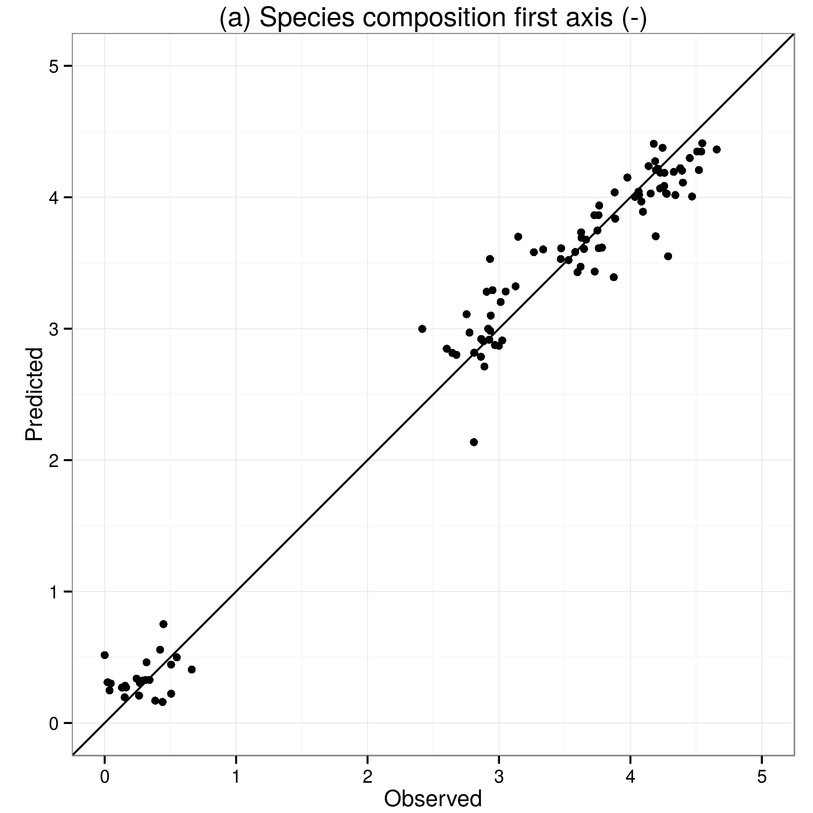
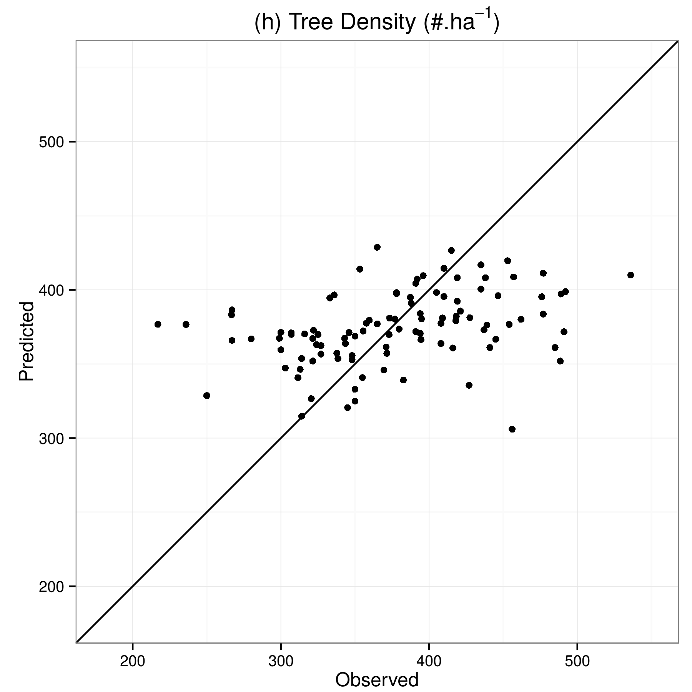
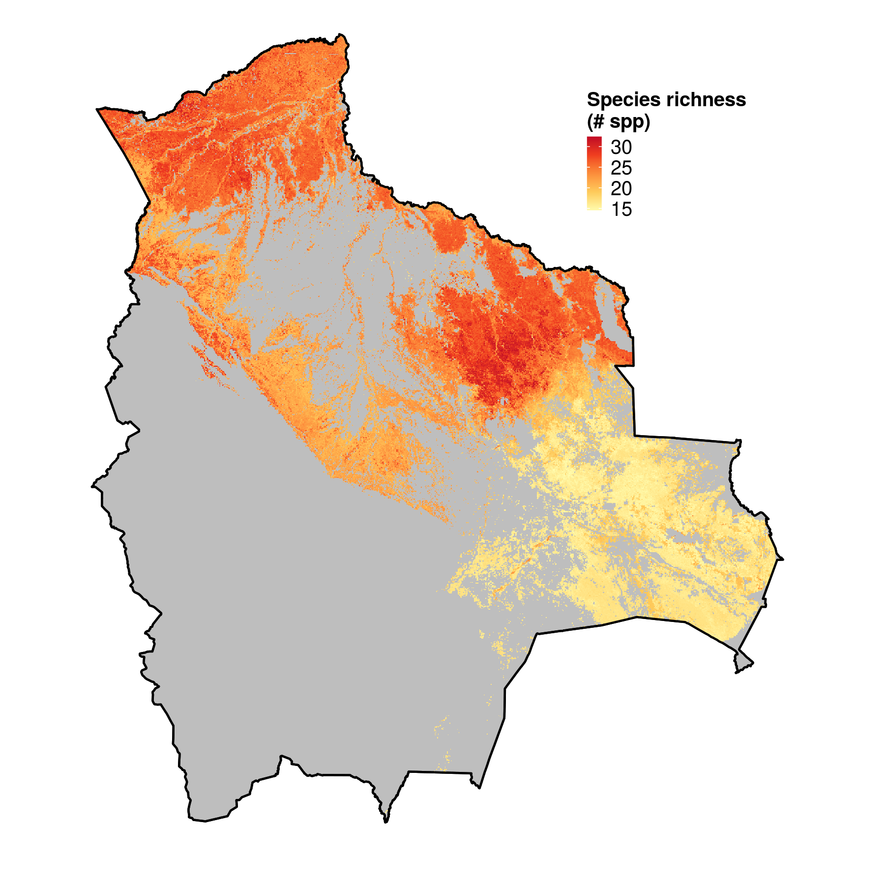
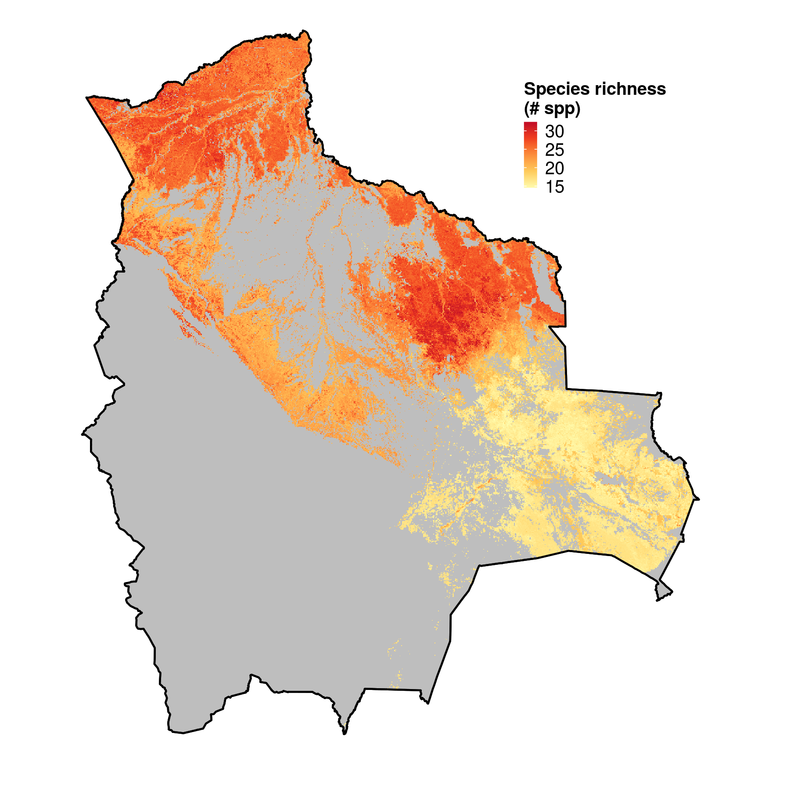
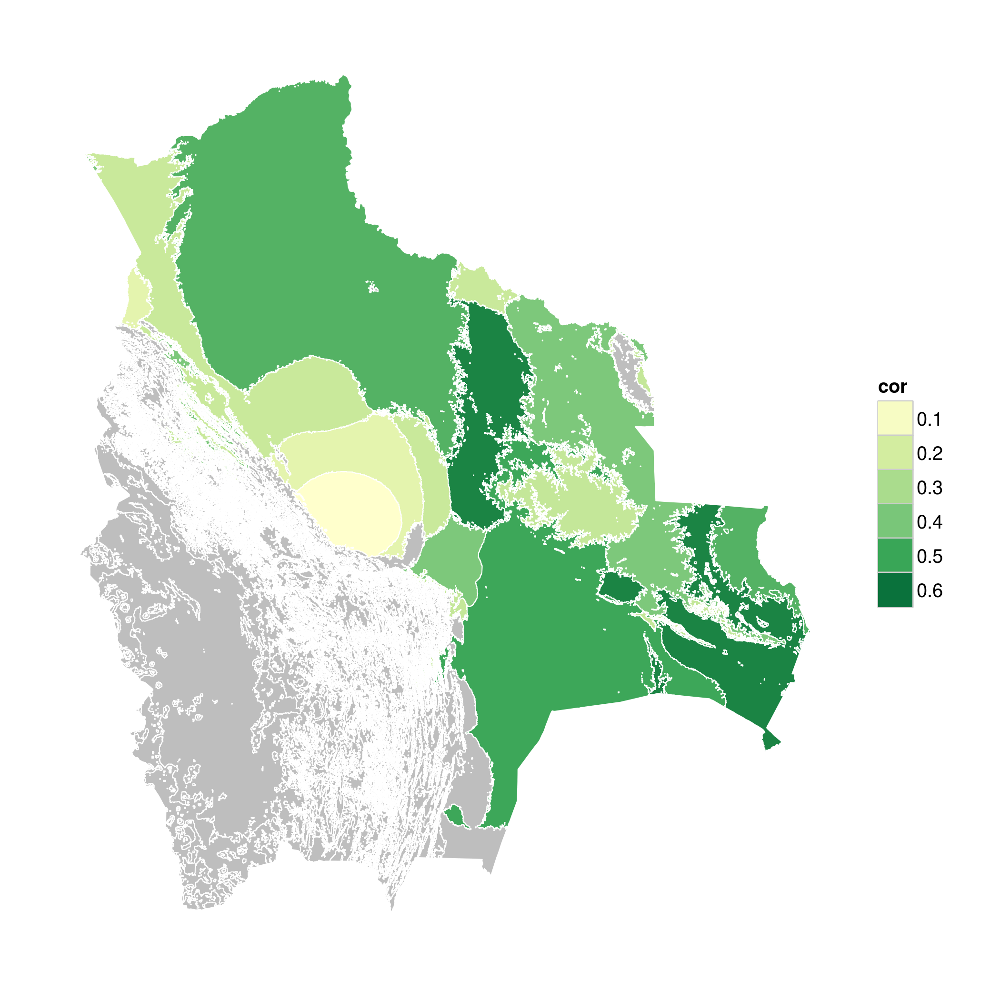

Remote Sensing based prediction of forest attributes
Loïc Dutrieux, 2015-10-20
ROBIN science meeting, Brussels
Julian Equihua, Lammert Kooistra, Martin Herold, Mariso Toledo, Nataly Ascarunz, Gerbert Roerink, Marielos Peña-Claros, Lourens Poorter
Why do we need maps of forest attributes?
Is that sufficient to:
- Find spatial patterns ?
- Design region specific policy actions ?
- Lacks spatial details
- Spatially discrete
- Costly to acquire
Limitations
Asner, Gregory P., et al. "High-resolution forest carbon stocks and emissions in the Amazon." Proceedings of the National Academy of Sciences 107.38 (2010): 16738-16742.
The Remote Sensing scaling recipe
Take
- 220 in-situ forest sites
- 28 remote sensing preditors
- A random forest model
-
Step by step:
- Select study site
- Select and prepare remote sensing layers
- Extract remote sensing variables for every in-situ location
- Train random forest model
- Select most important predictors
- Predict
Study site
In-situ variables
(The variables we'll try to predict)
| Variable | Category |
|---|---|
| Species composition (First two DCA* axes) | Floristic |
| Species richness | Floristic |
| Emergent density | Functional group |
| Liana infestation | Functional group |
| Palm density | Functional group |
| Mean DBH | Structure |
| Tree density | Structure |
| Basal area | Structure |
*Detrended Correspondence Analysis (DCA) summarizes species count for every site into a score.
Toledo, 2010. Neotropical lowland forests along environmental gradients
Remote sensing predictors
A set of ecologically relevant variables
- Moderate resolution datasets (1km²)
- A lot of them derived from MODIS
- Available globally
Remote sensing predictors
| Variable | Expected contribution | Number of predictors |
|---|---|---|
| Surface reflectance | Leaf chemistry | 14 |
| LAI | Foliage structure | 1 |
| Tree height | Vertical structure | 1 |
| NPP | Productivity | 1 |
| Phenology (HANTS) | Intra-annual dynamics | 5 |
| Terrain metrics | Topographic conditions | 4 |
| Cannopy clumping | Canopy structure | 1 |
| Tree cover | Forest density | 1 |
Data extraction
Data extraction - considerations of scale
- We assume sub-pixel spatial homogeneity
- Spatial aggregation required due to clustering of in-situ sites
- 104 calibration points after aggregation
Random forest ?
What is random forest?
- An ensemble learning method
- Builds multiple regression trees
- Good prediction performances
- Relatively interpretable (variable importance)
- Quite insensitive to potentially irrelevant predictors
- Well suited to such exploratory data mining approaches
- It's pure coincidence we're using it to predict forest attributes
Results
Modelling performances assessment
 Summary of variables remote sensing potential
| Variable | Category |
|---|---|
| Species composition (First two DCA* axes) | Floristic |
| Species richness | Floristic |
| Emergent density | Functional group |
| Liana infestation | Functional group |
| Palm density | Functional group |
| Mean DBH | Structure |
| Tree density | Structure |
| Basal area | Structure |
 


What now?
We have spatially continuous information on floristic properties at 1km resolution, what can we do with it?
Does species diversity matter for biomass?
According to this correlation map:
It depends where !
Avitabile V., Herold M., Heuvelink G., Lewis S.L., Phillips O.L., Asner G. P. et al., 2015. An integrated pan-tropical biomass maps using multiple reference datasets. Global Change Biology (in review)
Metzger, Marc J., et al. "A high‐resolution bioclimate map of the world: a unifying framework for global biodiversity research and monitoring." Global Ecology and Biogeography
Wrapping up - Conclusions - What have we learnt?
- We can predict biodiversity using remote sensing (Using a relatively simple approach)
-  These maps can be used to understand relations spatially. (But we needs to think of how to use them to their full potential)
- Potential to scale structural attributes of forests is limited
 But some future technological improvements are expected (GEDI, biomass satellite)
But some future technological improvements are expected (GEDI, biomass satellite)